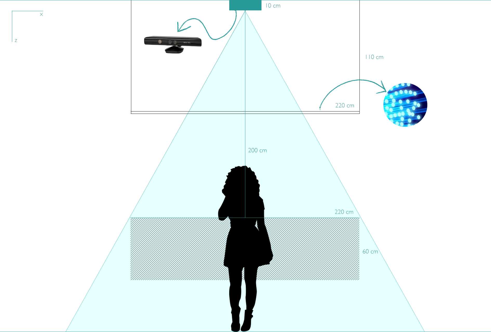

<!doctype html>
<html lang="en">
    <head>
        <meta charset="utf-8">
        <title>Aura: luz e tecnologia aplicadas na arte</title>
        <link rel="stylesheet" href="css/reveal.css">
        <link rel="stylesheet" href="css/theme/moon.css" id="theme">
        <!-- For syntax highlighting -->
        <link rel="stylesheet" href="lib/css/zenburn.css">

        <!-- If the query includes 'print-pdf', use the PDF print sheet -->
        <script>
          document.write( '<link rel="stylesheet" href="css/print/' + ( window.location.search.match( /print-pdf/gi ) ? 'pdf' : 'paper' ) + '.css" type="text/css" media="print">' );
        </script>
    </head>
    <body>

        <div class="reveal">
            <div class="slides"><section  data-markdown><script type="text/template"># Aura: arte e tecnologia aplicadas na arte
<hr />

#### Daniela Feitosa Araújo

<small>Porto Alegre 2018</small>
</script></section><section  data-markdown><script type="text/template">
## Agenda

- Introdução
- Interação e participação
- Arte computacional e interatividade
- A luz como material e o cubo preto
- Composição da obra
- Desafios
- Próximos passos
</script></section><section  data-markdown><script type="text/template">
# Introdução 
</script></section><section ><section data-markdown><script type="text/template">
# Interação e participação
</script></section><section data-markdown><script type="text/template">
# Da contemplação à interação
</script></section><section data-markdown><script type="text/template">
# O espectador<br>como co-autor
</script></section><section data-markdown><script type="text/template">
# Efemeridade na arte computacional
</script></section><section data-markdown><script type="text/template">
# Obra de arte<br>em tempo real
</script></section></section><section ><section data-markdown><script type="text/template">
# Arte computacional e interatividade
</script></section><section data-markdown><script type="text/template">
# Arte computacional

> "envolve sistemas computacionais tanto nos seus processos de criação e produção quanto na forma de apresentação"
>
> <cite>BOONE, 2013</cite>
</script></section><section data-markdown><script type="text/template">
# Interatividade na arte computacional
</script></section></section><section ><section data-markdown><script type="text/template">
# A luz como material e o cubo preto
</script></section><section data-markdown><script type="text/template">
# A luz como objeto ou material 

> "alguns artistas e movimentos estéticos estão fortemente relacionados com a linguagem da luz, mesmo quando não a utilizam como objeto central da obra"
>
> <cite>Brandi (2015)</cite>
</script></section><section data-markdown><script type="text/template">
# James Turrell

<video width="800" height="460" autoplay loop muted>
  <source src="images/james_turrell.mp4" type="video/mp4">
</video>

<small>"The light inside", 1999, James Turrell.</small>
</script></section><section data-markdown><script type="text/template">
#  Takahito Matsuo

<video width="800" height="460" autoplay loop muted>
  <source src="images/takahito_matsuo.mp4" type="video/mp4">
</video>

<small>"Fantasias Aquáticas Iluminadas", 2009, Takahito Matsuo.</small>
</script></section><section data-markdown><script type="text/template">
# Jim Campbell

<video width="800" height="460" autoplay loop muted>
  <source src="images/jim_campbell_1.mp4" type="video/mp4">
</video>

<small>"Light Topography (Jane's Pool)", 2014, Jim Campbell. Fonte: KQED</small>
</script></section><section data-markdown><script type="text/template">
# Jim Campbell

<video width="800" height="460" autoplay loop muted>
  <source src="images/jim_campbell_2.mp4" type="video/mp4">
</video>

<small>"The Journey",  2013, Jim Campbell, localizada no Aeroporto Internacional de San Diego. Fonte: KQED</small>
</script></section><section data-markdown><script type="text/template">
# O cubo preto

> "a maioria dos autores que trabalham com arte e tecnologia procuram o espaço do cubo preto como espaço expositivo"
> 
> <cite>Soares (2013)</cite>
</script></section></section><section ><section data-markdown><script type="text/template">
# Composição da obra


</script></section><section data-markdown><script type="text/template">
# Microsoft Kinect


</script></section><section data-markdown><script type="text/template">
## Sombras 


</script></section><section data-markdown><script type="text/template">
# Arduino
</script></section><section data-markdown><script type="text/template">
# Malha de LEDs e fibra ótica
</script></section><section data-markdown><script type="text/template">
# Protótipo
</script></section><section data-markdown><script type="text/template">
## Ambiente iluminado

<video width="800" height="460" autoplay loop muted>
  <source src="images/prototipo_luz.mp4" type="video/mp4">
</video>
</script></section><section data-markdown><script type="text/template">
## Ambiente com baixa luminosidade

<video width="800" height="460" autoplay loop muted>
  <source src="images/prototipo_escuro.mp4" type="video/mp4">
</video>
</script></section></section><section  data-markdown><script type="text/template">
# Desafios

- Escalando o trabalho
- Instalação e local expositivo
- Custo
</script></section><section  data-markdown><script type="text/template">
# Próximos passos

- Montar a primeira grade de LEDs
- Alterar o script para funcionar com uma matriz
- Buscar alternativa para o problema das sombras e da area de captura do Kinect
</script></section><section  data-markdown><script type="text/template">
# Obrigada
</script></section></div>
        </div>

        <script src="lib/js/head.min.js"></script>
        <script src="js/reveal.js"></script>

        <script>
            function extend() {
              var target = {};
              for (var i = 0; i < arguments.length; i++) {
                var source = arguments[i];
                for (var key in source) {
                  if (source.hasOwnProperty(key)) {
                    target[key] = source[key];
                  }
                }
              }
              return target;
            }

            // Optional libraries used to extend on reveal.js
            var deps = [
              { src: 'lib/js/classList.js', condition: function() { return !document.body.classList; } },
              { src: 'plugin/markdown/marked.js', condition: function() { return !!document.querySelector('[data-markdown]'); } },
              { src: 'plugin/markdown/markdown.js', condition: function() { return !!document.querySelector('[data-markdown]'); } },
              { src: 'plugin/highlight/highlight.js', async: true, callback: function() { hljs.initHighlightingOnLoad(); } },
              { src: 'plugin/notes/notes.js', async: true, condition: function() { return !!document.body.classList; } },
              { src: 'plugin/math/math.js', async: true }
            ];

            // default options to init reveal.js
            var defaultOptions = {
              controls: true,
              progress: true,
              history: true,
              center: true,
              transition: 'default',
              dependencies: deps
            };

            // options from URL query string
            var queryOptions = Reveal.getQueryHash() || {};

            var options = {};
            options = extend(defaultOptions, options, queryOptions);
            Reveal.initialize(options);
        </script>
        
          <script src="/scripts/talk"></script>
    </body>
</html>

